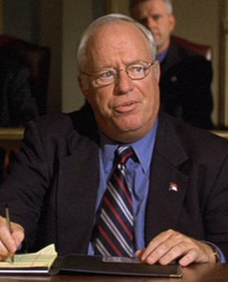

#7577 Hauptsache, die Chemie stimmt
Alternativ: Better Living Through Chemistry

 IMDB-Wertung: 6.3 / 10
IMDB-Wertung: 6.3 / 10  Metascore: 0
Metascore: 0 
Douglas Varney fristet ein einfaches und ereignisloses Dasein als Apotheker in einer Kleinstadt. Ständig steht er unter dem Pantoffel seiner äußerst dominanten Ehefrau Kara, ihre Liebe scheint erloschen und in seinem Job herrscht Langeweile. Als er allerdings eines Tages die Bekanntschaft mit einer jungen attraktiven Kundin Elizabeth macht, gerät sein beschauliches Leben aus den Fugen. Er verfällt der verführerischen Schönheit und beginnt mit ihr eine Affäre, in der sie ihm die Vorzüge verschreibungspflichtiger Medikamente näher bringt. Beide stürzen sich in eine heiße Affäre voller Sex, Alkohol, Drogen und Gefühle. Für die neu entflammte Liebe gehen die beiden letztlich gar so weit, dass sie den Mord an Elizabeths Ehemann planen.
Jahr: 2014
Dauer: 91 Minuten
FSK: 12
Land: England Studio: Universal PicturesTonspuren: DTS - ,
Untertitel: Deutsch,
Auflösung: 1080p (1920x800) Größe: 4198 MB
Genre: Drama, Komödie
Regisseur: Geoff Moore, David Posamentier
Drehbuch: Geoff Moore
Soundtrack:
Darsteller:
 Sam Rockwell als Doug Varney
Sam Rockwell als Doug Varney Olivia Wilde als Elizabeth Roberts
Olivia Wilde als Elizabeth Roberts Michelle Monaghan als Kara Varney
Michelle Monaghan als Kara Varney Jane Fonda als Pharmacy Customer
Jane Fonda als Pharmacy Customer Ray Liotta als Jack Roberts
Ray Liotta als Jack Roberts Norbert Leo Butz als Agent Andrew Carp
Norbert Leo Butz als Agent Andrew Carp Ben Schwartz als Noah
Ben Schwartz als Noah Ken Howard als Walter Bishop
Ken Howard als Walter Bishop- Jenn Harris als Janet
- Harrison Holzer als Ethan Varney
 Peter Jacobson als Dr. Roth
Peter Jacobson als Dr. Roth Ken Arnold als Ed
Ken Arnold als Ed- Tracy McMullan als Bree Bishop
- Wil Love als Mr. Aanenson
- Regen Wilson als Brian
- Shane Tunney als Waiter
- Lauren White als Kaye Tashman
- Jason Glass als Hipster Teenager
- Lee Ordeman als Local Dad
-  Doug Roberts als Bartender
- Pete Rockwell als Old Man Cyclist
- Radford Baker als Bicycle Race Spectator , uncredited
- Silvia Baldassini als Dinner Date , uncredited
- Joe Barlam als Race Fan , uncredited
- Michael J. Begley als Donald Zucker , uncredited
- Greg Crowe als Jerry Heller , uncredited
- Justin Curtis als Bike Race Spectator , uncredited
- Barbara Edwards als Bike Race Supporter , uncredited
- Brian Elder als Bike Spectator , uncredited
- Dave Fairbanks als Bike Race Fan , uncredited
- Eugenia Gonzales als Bike Race Spectator , uncredited
 James A. Howard als Tourist , uncredited
James A. Howard als Tourist , uncredited Donald Imm als Doctor Scrubs , uncredited
Donald Imm als Doctor Scrubs , uncredited- Julian Johnson als Tour de Woodbury Spectator , uncredited
- Jaci Jones als Bike Race Spectator , uncredited
- James Judice als Bike Spectator , uncredited
 Michael J. Kraycik als Pharmacy Customer , uncredited
Michael J. Kraycik als Pharmacy Customer , uncredited- Elizabeth S. London als Bike Race Supporter , uncredited
- Patricia Mizen als Pharmacy Shopper , uncredited
- Tony Moore als Race Spectator , uncredited
- Kelly L. Moran als Bike Racer , uncredited
 Jeffrey Mowery als Bike Race Official , uncredited
Jeffrey Mowery als Bike Race Official , uncredited- Melissa Panos als Tour de Woodbury Fan , uncredited
- Darla Robinson als Mrs. Morello , uncredited
- Broocks Willich als Mrs. Heller , uncredited
- Sonnie Brown als Principal Song-Carmichael
- Ron Heneghan als Officer Willits
- Bethany Hoffman als Miss D'Francesco
- Michael Shawn Montgomery als Arnold Morello
- Amanda Ellis als Young Girl
Datei: X:\2014(G-M)\Hauptsache, die Chemie stimmt (2014, FSK12, 1920x800).mkv seit 21.11.2017
Festplatte: HD 2013(I-Z)-2014(A-Z)
 Es gibt insgesamt 136 Filme in der Gruppe '2014(G-M)'
Es gibt insgesamt 136 Filme in der Gruppe '2014(G-M)'